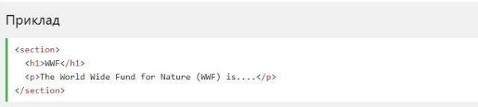
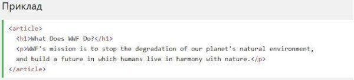

HTML5 пропонує нові семантичні елементи для визначення різних частин веб-сторінки:
HTML5 <section> елемент
Елемент <section> визначає розділ в документі.
Згідно з документацією в3к'с HTML5: "розділ представляє собою тематичну угруповання контенту,
зазвичай з
заголовком".
Домашня сторінка зазвичай може бути розділена на розділи для ознайомлення, змісту і контактної
інформації.

HTML5 <article> елемент
Елемент <article> визначає незалежний, автономний вміст.
Стаття повинна мати сенс самостійно, і вона повинна мати можливість читати його незалежно від іншої
частини веб-сайту.
Приклади того, де можна використовувати елемент <article>:
- Повідомлення на форумі
- блозі
- Газетна стаття
